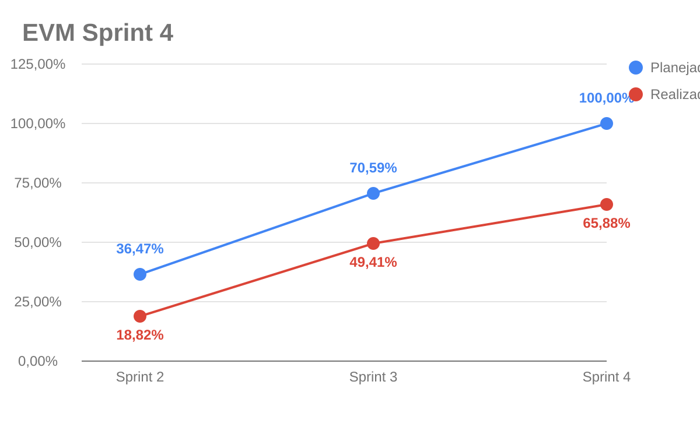
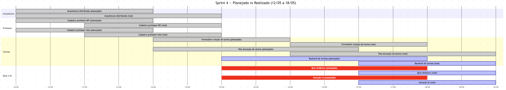

EVM Ágil — Sprint 4
O EVM (Earned Value Management) é usado para acompanhar a relação entre o valor planejado, o valor efetivamente agregado e o custo consumido pelo projeto. Neste documento, o EVM foi adaptado ao contexto ágil usando pontos de história/cards como medida de escopo e o Plano de Custos como base para o custo financeiro estimado da sprint.
Legenda
| Métrica | Descrição |
|---|---|
| PRP | Pontos planejados para a sprint |
| RPC | Pontos concluídos na sprint |
| APC | Percentual real de pontos concluídos (RPC / PRP) |
| PPC | Percentual planejado para a sprint |
| BAC | Orçamento estimado para a sprint |
| PV | Valor planejado (PPC x BAC) |
| EV | Valor agregado (APC x BAC) |
| AC | Custo real estimado da sprint |
| CV | Variação de custo (EV - AC) |
| SV | Variação de cronograma (EV - PV) |
| CPI | Índice de desempenho de custo (EV / AC) |
| SPI | Índice de desempenho de prazo (EV / PV) |
Parâmetros da Sprint 4
| Parâmetro | Valor | Observação |
|---|---|---|
| Período | 12/05 a 18/05/2026 | Sprint semanal da Release Major 2 |
| Duração | 7 dias | |
| Integrantes considerados | 9 pessoas | Quantidade base do plano de custos |
| Carga por integrante | 4 h | Ajuste informado para a sprint |
| PRP | 25 pontos | Arquitetura, professor e turmas |
| RPC | 14 pontos | Pontos fechados com estimativa mensurável |
| Fonte dos cards | Zenhub + GitHub Issues | Consulta à workspace 2026-1-AnatoQuizUp em 20/05/2026 |
Custo da Sprint
Os custos foram derivados do Plano de Custos. Como o plano-base usa 9 integrantes e 14 h semanais por integrante, os itens variáveis foram proporcionalizados para 9 integrantes com 4 h por pessoa. A hospedagem foi mantida como custo fixo semanal.
| Categoria | Cálculo aplicado | Custo |
|---|---|---|
| Hora de trabalho dos integrantes | R$ 309,02 por estudante/semana x 4/14 x 9 integrantes |
R$ 794,62 |
| Computadores | Custo semanal de depreciação para 9 computadores | R$ 121,15 |
| Energia | R$ 11,34 semanais x 4/10 |
R$ 4,54 |
| Internet | R$ 12,50 semanais x 4/10 |
R$ 5,00 |
| Hospedagem e deploy | Custo semanal Railway Hobby | R$ 6,34 |
| Total estimado da sprint | R$ 931,65 |
Valores EVM da Sprint 4
| Métrica | Valor | Descrição |
|---|---|---|
| PRP | 25 pts | Pontos planejados |
| RPC | 14 pts | Pontos concluídos |
| APC | 56,00% | 14 / 25 |
| PPC | 100,00% | Escopo planejado da sprint |
| BAC | R$ 931,65 | Orçamento estimado da sprint |
| PV | R$ 931,65 | Valor planejado |
| EV | R$ 521,72 | Valor agregado |
| AC | R$ 931,65 | Custo estimado consumido |
| CV | -R$ 409,93 | Variação de custo |
| SV | -R$ 409,93 | Variação de cronograma |
| CPI | 0,56 | EV / AC |
| SPI | 0,56 | EV / PV |
Gráfico EVM

Lógica dos dados do gráfico
O gráfico usa percentuais acumulados até a sprint exibida. A linha azul divide o total planejado acumulado entre as sprints consideradas, enquanto a linha vermelha acumula apenas pontos concluídos. Até a Sprint 4, foram planejados 85 pontos e concluídos 56 pontos, resultando em 65,88% de realização acumulada.
Diagnóstico
Situação: atraso de cronograma e valor agregado abaixo do custo estimado
A Sprint 4 concluiu 56,00% dos pontos planejados. O CPI 0,56 e o SPI 0,56 indicam que o valor agregado ficou abaixo do custo e do prazo planejados.
A leitura deve considerar uma limitação: o card de arquitetura distribuída foi fechado, mas não possuía estimate no Zenhub/GitHub. Ele aparece como entrega qualitativa, sem entrar no valor agregado mensurável.
Gráfico de Gantt — Planejado vs Realizado

Análise da Sprint 4
O que foi entregue (14 pontos mensuráveis)
| Card | Pontos | Evidência |
|---|---|---|
| Usuario-Service #17 — Cadastro de professor — API | 3 | Fechado em 14/05/2026; estimativa inferida do backlog de requisitos |
| Web #12 — Cadastro de professor — Tela | 3 | Fechado em 14/05/2026 |
| Web #43 — Formulário de criação de turma | 3 | Fechado em 18/05/2026 |
| Web #44 — Tela de alocação de alunos | 5 | Fechado em 18/05/2026 |
Entregas qualitativas sem estimate
| Card | Evidência | Observação |
|---|---|---|
| Doc #29 — Arquitetura distribuída e deploy | Fechado em 19/05/2026 | Sem estimate; não entrou no EV |
| Doc #21 — Cadastro de professor | Fechado em 14/05/2026 | Card agregador sem estimate |
| Doc #22 — Cadastro e gestão de questão | Fechado em 15/05/2026 | Card agregador sem estimate |
O que não foi entregue
Backend de turmas, visualização de turmas pelo aluno, quiz dinâmico, listas de questões, geração de questões com IA e dashboard analítico permaneceram em andamento ou no backlog da sprint seguinte.
Ações para a próxima sprint
- Completar backend e frontend de turmas do aluno.
- Priorizar listas de questões e quiz dinâmico antes de ampliar o escopo de IA.
- Quebrar cards agregadores grandes em entregas estimáveis.
- Registrar horas efetivas por sprint para comparar com o custo estimado.
Histórico de Versão
| Data | Versão | Descrição | Autor(es) |
|---|---|---|---|
| 21/05/2026 | 1.0 | Adequação ao modelo Agile EVM e ao plano de custos do projeto | Maria Luisa |